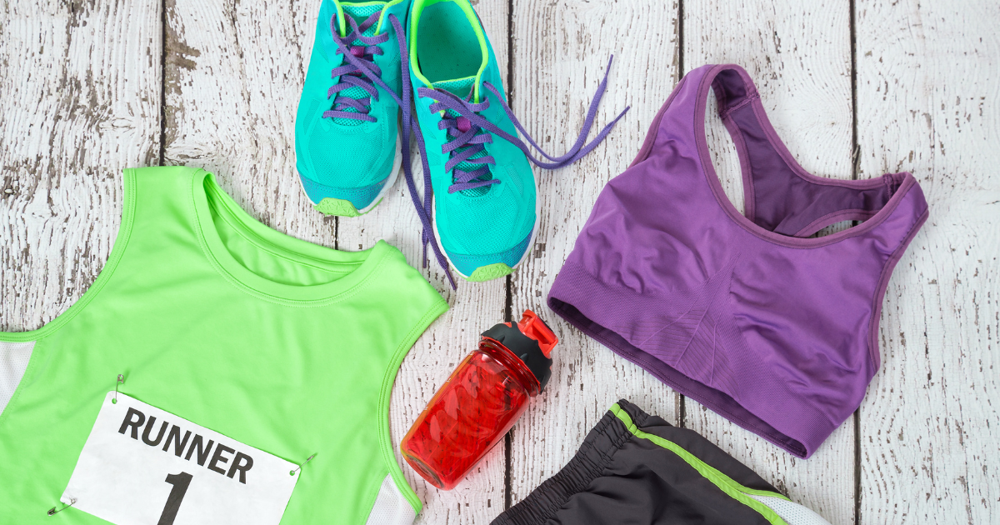
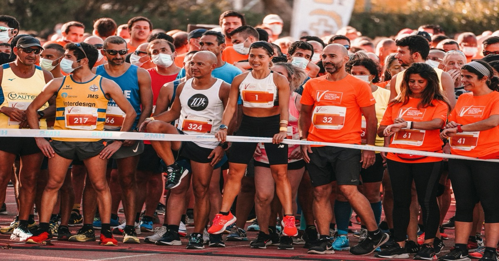
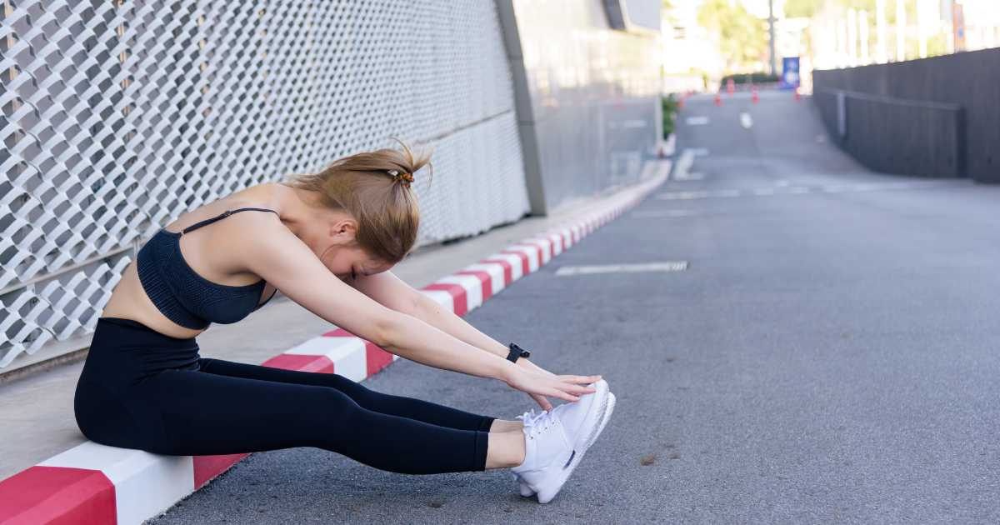

Gear Guides
Race Day Gear Guide: Tested Recommendations
Curated gear picks from energy gels to recovery tools. Every product tested by runners, organized by category.
Expert tips to help you start every race feeling ready and confident.
The definitive checklist for race day, from bib pickup to crossing the finish line. Based on feedback from 500+ runners.

Curated gear picks from energy gels to recovery tools. Every product tested by runners, organized by category.

A calm evening routine sets you up for a great race morning. Here's exactly what to do in the 12 hours before your start time.
Running your first 5K? This guide covers everything from registration to crossing the finish line—no running experience required.

Which energy gels to pack, when to take them, and how many you need for your race distance. Tested recommendations inside.

Handheld, belt, or vest? How much to drink and when. A complete hydration strategy for every race distance.
What to do each day during race week. From 7 days out to race morning, here's your complete timeline.

From forgetting body glide to arriving too late, these are the mistakes that ruin races—and how to prevent them.
Rain doesn't have to ruin your race. Here's exactly what to pack and how to prepare when weather turns wet.
Temperature-based gear guide for cold race days. What to wear at every temp range, plus throwaway layer strategy.

From foam rollers to compression boots, a tiered guide to recovery gear at every budget. Honest recommendations inside.

Everything you need for your half marathon — gear, nutrition timing, pacing strategy, and race-morning routine.

Trail-specific gear, mandatory equipment, nutrition strategy, and course prep for 5K to ultra distances.

Nail the fourth discipline. Complete gear list for swim, bike, run — plus T1 and T2 setup and time-saving tips.
Timing, portion sizes, and meal ideas for every distance from 5K to marathon. Avoid race-morning stomach issues.
Join 2,000+ runners getting weekly tips on race-day preparation. No spam, unsubscribe anytime.